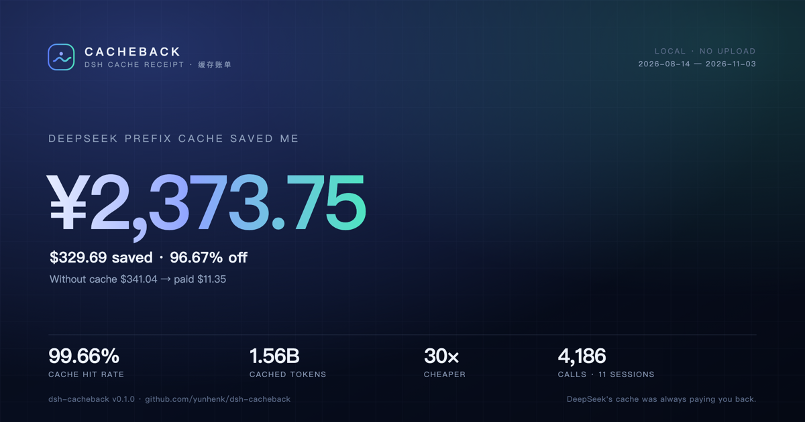
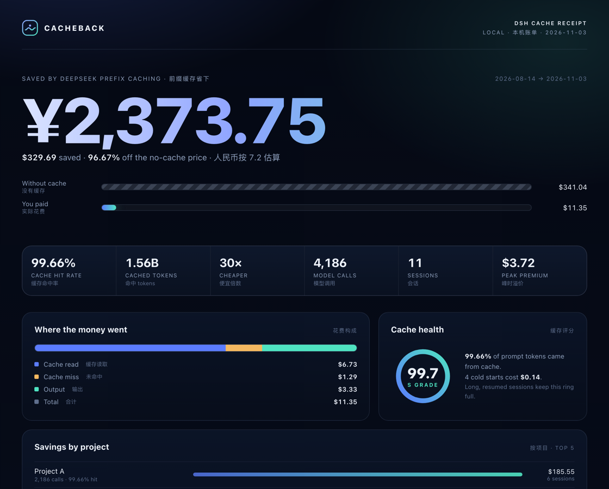

DeepSeek 的前缀缓存命中价是未命中价的 1/50。DSH 的日志里本来就有每一笔命中，但从来没有一页把总额算给你。 Cacheback 逐笔回放本地会话，按官方峰谷价重新计费，把 省下的钱、花掉的钱、还能省的钱 打成一张收据。
dsh plugin --profile web add github:yunhenk/dsh-cacheback


/cache redact。查看完整账单 →把每次调用的命中 / 未命中 / 输出分开计价，再和“没有缓存”的反事实成本对比。不是拍脑袋的百分比，是逐笔加出来的美元和人民币。
缓存读取、未命中、输出三条线；项目、模型、天三个维度。输出经常是隐藏的大头，账单会把它单独标出来。
峰时溢价、冷启动、会话分散、插件前缀变化——每一条都给出具体金额和可执行的动作，而不是一句“注意成本”。
/cache card 生成 1200×630 SVG，只有聚合数字，没有项目名、路径和会话标题。发 X、发群、发朋友圈都不会泄露工作区。
DSH 已经在每个 assistant/message 里持久化了 provider usage。Cacheback 只读这些日志，连 session 都不用重跑。
DSH 的 JSONL 后端每批写一个 Zstandard frame，一个长会话可能有几千帧。Cacheback 按 frame magic 切开逐帧解码，尾部写了一半的帧直接跳过，所以会话正在跑的时候也能读。
每条 assistant/message 都带 provider 返回的 usage 和模型 id。Cacheback 按调用发生的北京时间判断峰谷，逐笔计价，再按项目 / 模型 / 天汇总。
“省下”的定义是：同样的 prompt 如果没有命中缓存、全部按未命中价重读，需要多花多少。这是衡量前缀缓存价值的标准反事实，不是退款，也不是估算。
| deepseek-flash | 谷时 | 峰时 |
|---|---|---|
| 缓存命中 / 1M | $0.003 | $0.006 |
| 缓存未命中 / 1M | $0.15 | $0.30 |
| 输出 / 1M | $0.60 | $1.20 |
/cache /cache receipt # HTML 账单 /cache card # 分享卡 /cache 30d redact # 最近 30 天，隐藏项目名 /cache json # 原始数字
输入是 ~/.dsh/sessions，输出是 ~/.dsh/cacheback。没有 socket，没有 telemetry，没有远程字体。
SVG 只有总额、命中率、调用数。项目名、路径、会话标题一个都不出现。
删掉 ~/.dsh/cacheback 和 profile 里的条目即可。会话日志本来属于 DSH。
不会。这是“缓存折扣值多少钱”的量化，不是返现，也不是账单退款。它帮你判断缓存有没有在工作、哪里还在漏。
口径一致：都用 provider 返回的 usage 和官方价目表。控制台可能还有赠送余额、税费、汇率差；Cacheback 是本地的、可复核的收据，不是发票。
命中率取决于会话长度、是否续用、插件/工具前缀是否稳定。新会话第一请求必然是 miss；长任务、少重开，命中率会很快上去。
当前只给 DeepSeek 调用计价，因为缓存计价方式不同。其他 provider 的调用会被计数并标注“已排除”，不会用错误的价格硬算。
不会。插件没有网络代码。分享卡是一个本地 SVG 文件，发不发、发去哪里由你决定。